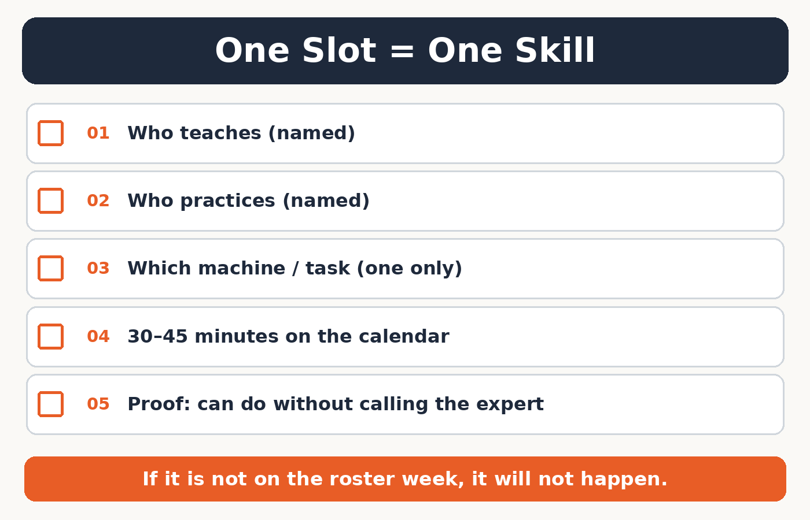
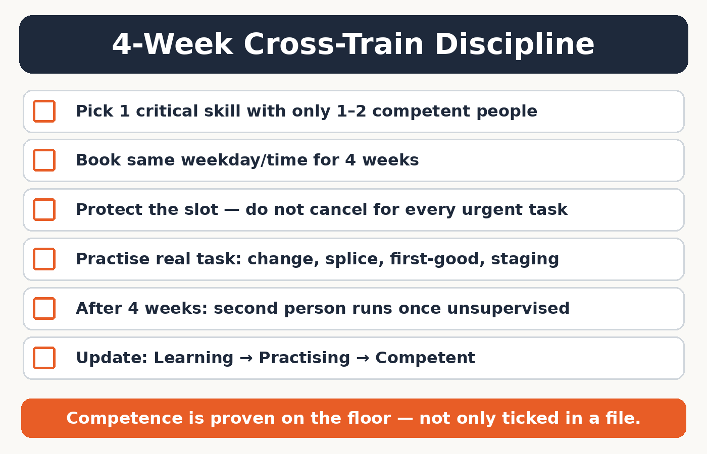
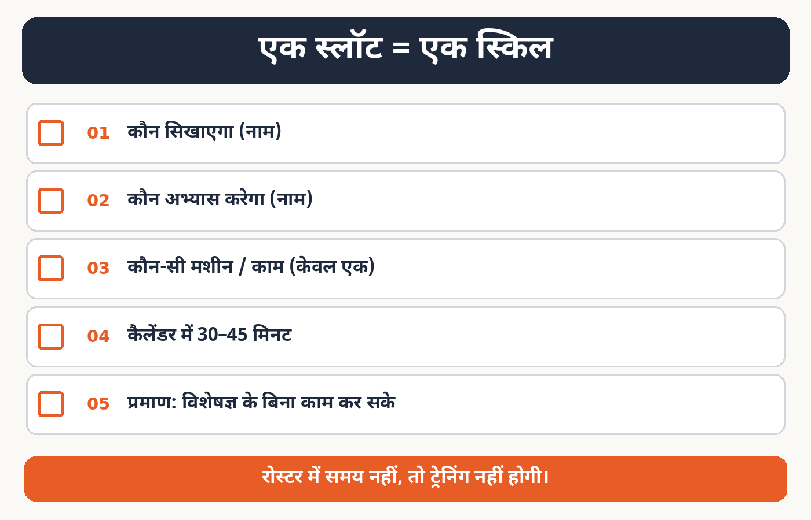
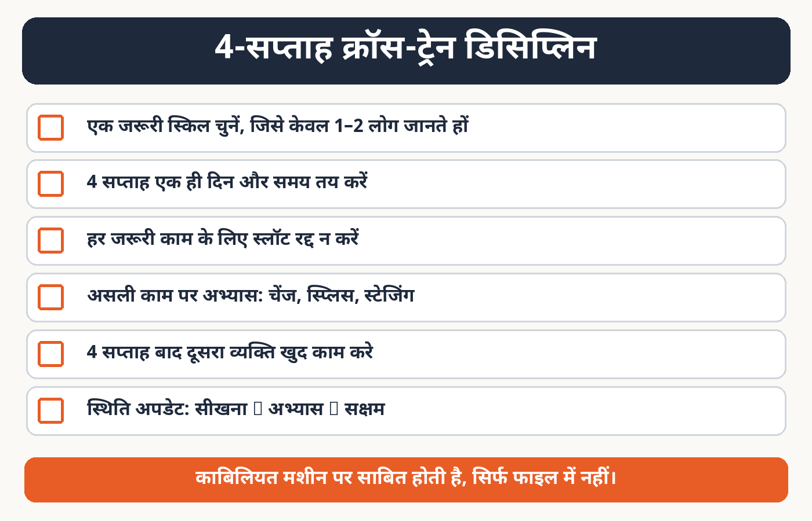

👥 Weekly Cross-Training Slots That Actually Happen
📖 8-min read | Plant Operations | Practical, numbers-first
Most plants have a skill matrix. Fewer have a weekly slot where a second person actually runs the task.
Without that slot, job recipes (Blog 104), staging (106), and splice standards (107) stay locked to one or two names. When those names are off, the discipline series collapses into phone calls and “wait for him.”
A Skill Matrix Without a Calendar Is a Wish List
Posting levels (Learning / Practising / Competent / Can Train) is useful. It does not create competence. Competence comes from supervised reps on the real task, on a protected time window.
This post is not a full HR system. It is one habit: one critical skill, one weekly slot, four weeks, then proof.
One Slot = One Skill

- Who teaches — named for that week
- Who practices — named (one person; two only if the task allows)
- Which task — one only (e.g. PET job change to first-good, or standard splice, or staging checklist)
- When — same weekday/time for four weeks (30–45 minutes)
- Proof — after four weeks, practice person runs once without calling the expert
If the slot is cancelled every week for “urgent production,” you do not have a training system — you have a hope.
4-Week Discipline

- Pick one critical skill that has only 1–2 competent people on the constraint line.
- Book the same slot for four weeks on the shift roster (visible, not only verbal).
- Protect it: treat cancellation like cancelling a customer job — needs a reason and a reschedule.
- Practice the real task (changeover, splice, staging, first-good log) — not only a talk at the panel.
- Week 4+: one unsupervised run; note what still needed help.
- Update status in plain words (Learning → Practising → Competent). No fake ticks.
How This Protects the Discipline Series
- 104 Job recipe — useless if only one person can follow it under pressure
- 106 Staging — fails when the usual stager is on leave
- 107 Splice — break rates rise when the “good splice” person is off
- 105 Short stops — ADJUST/CLEAR ticks often spike with thin coverage
Cross-training is how those posts stay true on night shift and festival weeks — not only on the day the expert is present.
What Good Looks Like After 30 Days
- One skill has a second person who completed an unsupervised run
- The weekly slot appears on the roster four times (even if one was rescheduled, not silently dropped)
- Daily meeting can name coverage risk before leave, not only after a bad shift
Key Takeaway
👥 साप्ताहिक क्रॉस-ट्रेनिंग स्लॉट जो सच में होते हैं
📖 9-min read | प्लांट ऑपरेशन्स
ज़्यादातर प्लांट में स्किल मैट्रिक्स है। कम में वह साप्ताहिक स्लॉट है जहाँ दूसरा व्यक्ति सच में काम चलाता है।
एक स्लॉट = एक स्किल

- कौन सिखाता है — नामित
- कौन प्रैक्टिस करता है — नामित
- कौन सा काम — केवल एक
- कब — चार हफ्ते एक ही दिन/समय (30–45 मिनट)
- सबूत — चार हफ्ते बाद बिना एक्सपर्ट बुलाए एक रन
